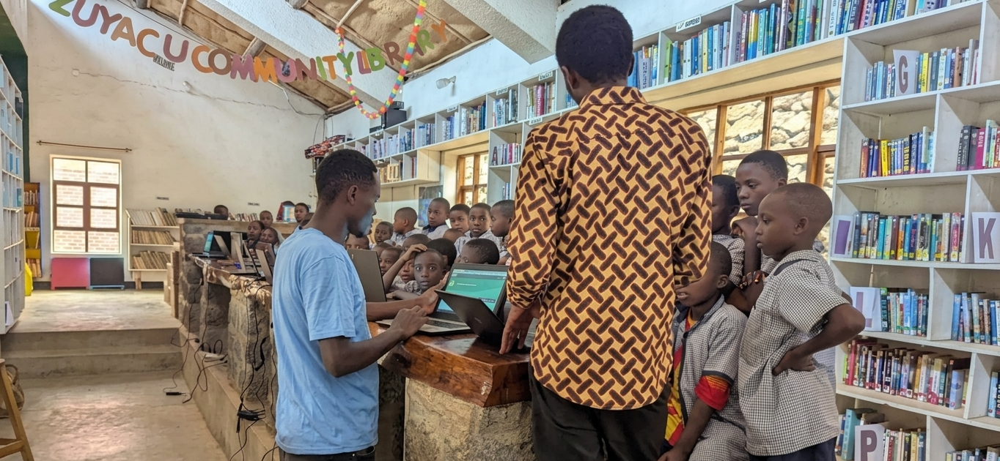

School Retention. School Materials. Language&Digital Access.

Every child who leaves school has a reason. Bring Them Back is Light Them Foundation's program to find those children, understand what pushed them out, and give them what they need to return.
We work directly inside communities in Burera District, identifying students who have dropped out of primary school. Through home visits and conversations with families, we map the specific barriers each child faces, whether that is missing school materials, unpaid fees, or family pressure.
Once we understand the gap, we fill it. We provide the materials and support each student was missing, and we work with parents and community members to make sure that what brings a child back to school is also what keeps them there.
Bring Them Back does not stop at the classroom door. It starts in the community, walks with the child back to school, and stays until the return becomes permanent.

Sangira N'Abandi is Light Them Foundation's lunch subsidy program for primary school students identified as vulnerable by their schools. We cover up to 90% of school lunch fees for enrolled students whose families cannot afford them, ensuring that hunger does not become the reason a child loses focus or eventually drops out.
We do not cover the full cost by design. The remaining contribution stays with the family, because we believe that parents, regardless of their economic situation, should remain active participants in their child's education. A shared responsibility, however small, keeps that connection alive.
By working through schools to identify who needs support most, and by keeping families involved in the process, Sangira N'Abandi helps vulnerable students stay nourished, stay present, and stay connected to their own learning.

Round Tables is Light Them Foundation's English proficiency and digital literacy program for Primary 4, 5, and 6 students in Burera District.
We start by diagnosing where each student actually stands. Through baseline assessments, we identify individual gaps in communication, comprehension, and digital skills, then build an English curriculum that responds directly to what students need.
From there, learning happens in layers. We use IXL skills to assess student understanding every week, tracking progress and identifying which concepts need reinforcement. When a gap appears, we suggest targeted skills to close it.
But assessments are only the backbone. The heart of Round Tables is engagement. Students discuss ideas in roundtable conversations, learn through songs, and complete creative activities at home with our guidance. The goal is not a student who can pass a test. It is a student who can think, communicate, and create in English with real confidence.
By combining weekly digital assessment with active, creative learning, Round Tables builds the two skills Rwanda's next generation needs most: the ability to communicate in English and the ability to navigate a digital world.
"The world is one community now. Our job is to make sure our students can participate in it, contribute to it, and benefit from it. That means removing every barrier standing in their way." — Elie, Curriculum Development Lead
Short moments. Real stories. Click to read.